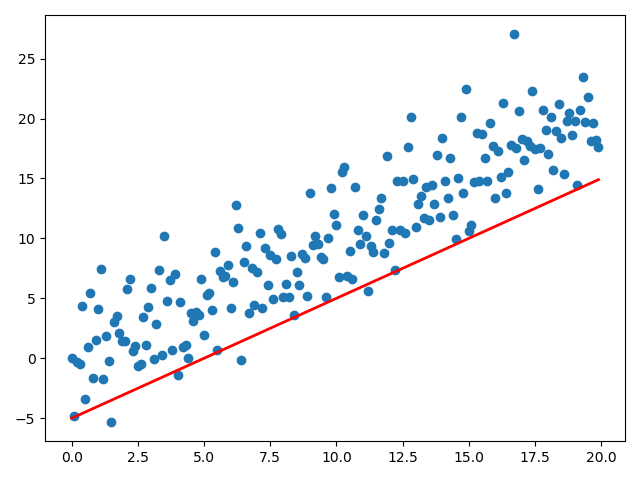

Note
Click here to download the full example code
Just testing how an animated plot turns out¶
Out:
fig size: 100.0 DPI, size in inches [6.4 4.8]
/home/atom/cvlab/thesis/cvlab_toolbox/examples/plot_ani.py:45: UserWarning: Matplotlib is currently using agg, which is a non-GUI backend, so cannot show the figure.
plt.show()
import numpy as np
import matplotlib.pyplot as plt
import matplotlib.animation as animation
import sys
import numpy as np
import matplotlib.pyplot as plt
from matplotlib.animation import FuncAnimation
fig, ax = plt.subplots()
fig.set_tight_layout(True)
# Query the figure's on-screen size and DPI. Note that when saving the figure to
# a file, we need to provide a DPI for that separately.
print('fig size: {0} DPI, size in inches {1}'.format(
fig.get_dpi(), fig.get_size_inches()))
# Plot a scatter that persists (isn't redrawn) and the initial line.
x = np.arange(0, 20, 0.1)
ax.scatter(x, x + np.random.normal(0, 3.0, len(x)))
line, = ax.plot(x, x - 5, 'r-', linewidth=2)
def update(i):
label = 'timestep {0}'.format(i)
print(label)
# Update the line and the axes (with a new xlabel). Return a tuple of
# "artists" that have to be redrawn for this frame.
line.set_ydata(x - 5 + i)
ax.set_xlabel(label)
return line, ax
if __name__ == '__main__':
# FuncAnimation will call the 'update' function for each frame; here
# animating over 10 frames, with an interval of 200ms between frames.
anim = FuncAnimation(fig, update, frames=np.arange(0, 10), interval=200)
if len(sys.argv) > 1 and sys.argv[1] == 'save':
anim.save('line.gif', dpi=80, writer='imagemagick')
else:
# plt.show() will just loop the animation forever.
plt.show()
Total running time of the script: ( 0 minutes 0.269 seconds)